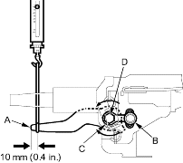
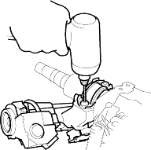
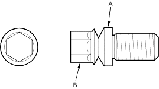

- Move the tilt lever (A) from the loose position to the lock position 3 to 5 times; then measure the tilt lever preload 10 mm (0.4 in.) from the end of the tilt lever.
Preload: 70 - 90 N (7 - 9 kgf, 15 - 20 lbf)

- If the measurement is out of the specification, adjust the preload using the following procedures.
- Loosen the tilt lever, and set the steering column in the neutral position.
- Remove the 6 mm lock bolt (B), and remove the stop (C). Be careful not to loosen the tilt lever when installing the stop or tightening the 6 mm lock bolt.
- Adjust the preload by turning the tilt lock bolt (D) left or right.
- Pull up the tilt lever to the uppermost position, and install the stop. Check the preload again If the measurement is still out of specification, repeat the above procedures to adjust.
- Remove the steering column (see page 17-9).
- Centre punch each of the two shear bolts, and drill their heads off with a 5 mm (3/16 in.) drill bit. Be careful not to damage the switch body when removing the shear bolts.

- Remove the shear bolts from the switch body.
- Install the switch body without the key inserted.
- Loosely tighten the new shear bolts.
- Insert the ignition key, and check for proper operation of the steering wheel lock and that the ignition key turns freely.
- Tighten the shear bolts (A) until the hex heads (B) twist off.
